Saint Gobain - Student Architecture Competition
As students enter the campus, they are met with the freedom to choose their own path. Meandering walkways guide them through a sequence of public and private spaces shaped by canopy, topography, and architecture, offering views of protected forest and the surrounding town. Interior spaces are organized around truss roof systems and clustered programs, each offering framed views of the landscape. The campus begins at Les Grands Ateliers and follows the natural slope of the site, culminating in a space for reflection.
Constructed entirely from wheat straw and hemp harvested from nearby farmland, the campus embodies a sustainable ethos. The program encourages students to engage deeply—to learn, reflect, and build a sense of community.
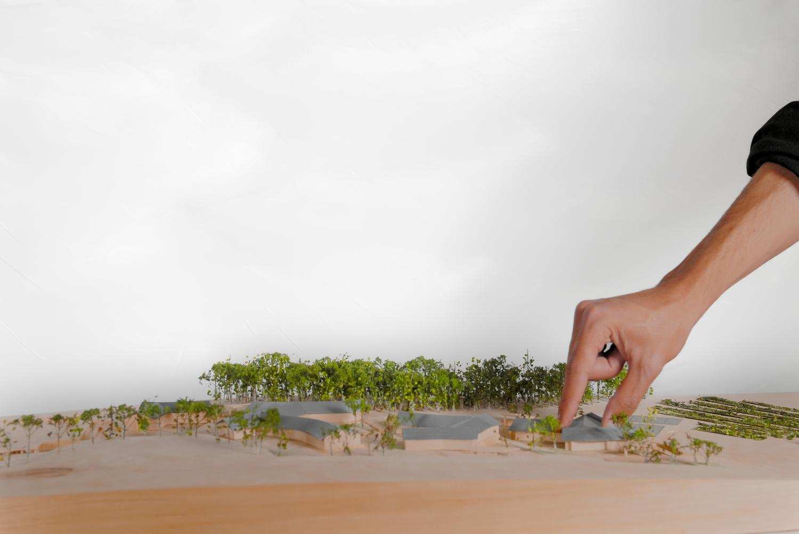
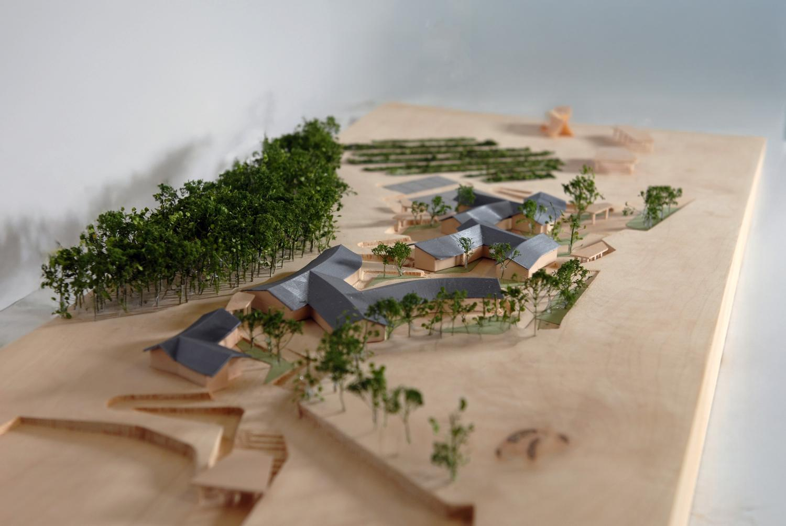
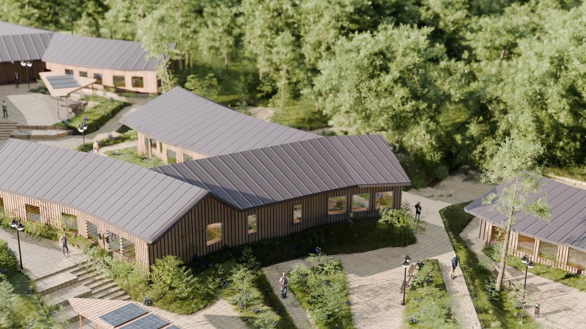
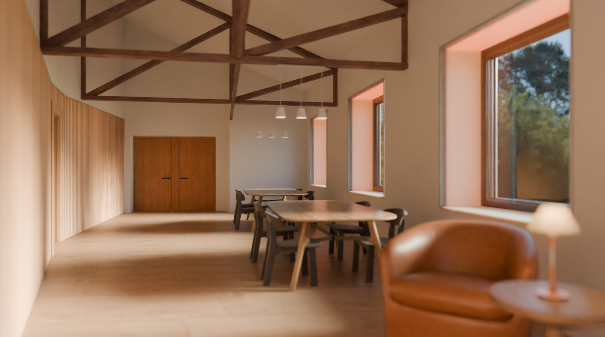
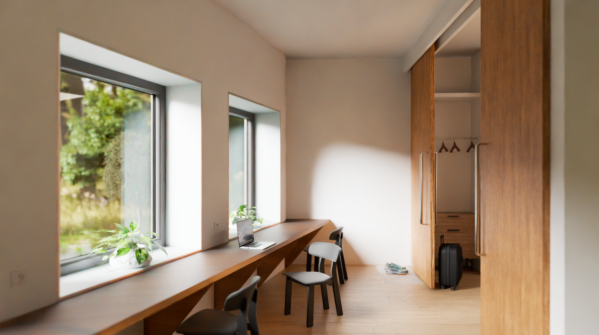
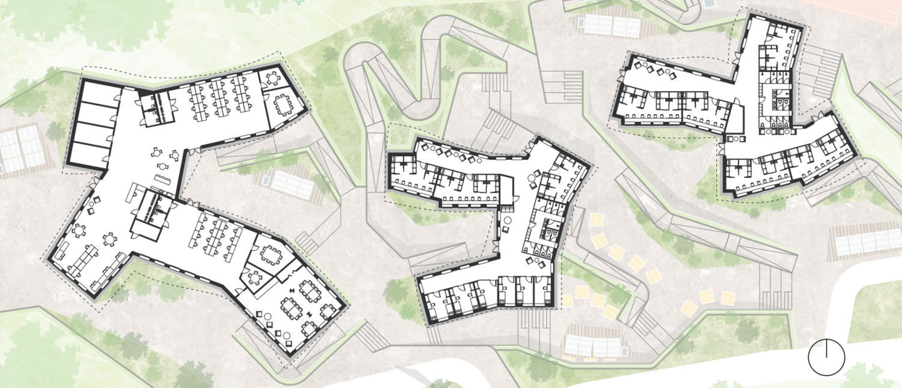
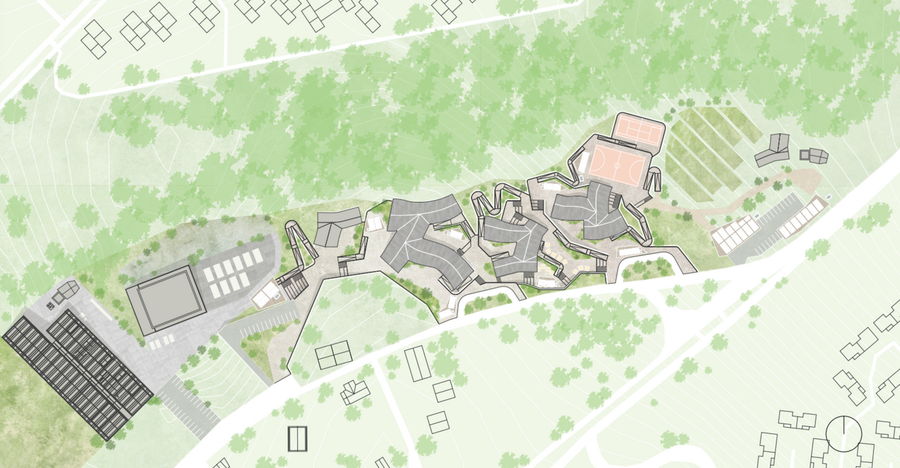
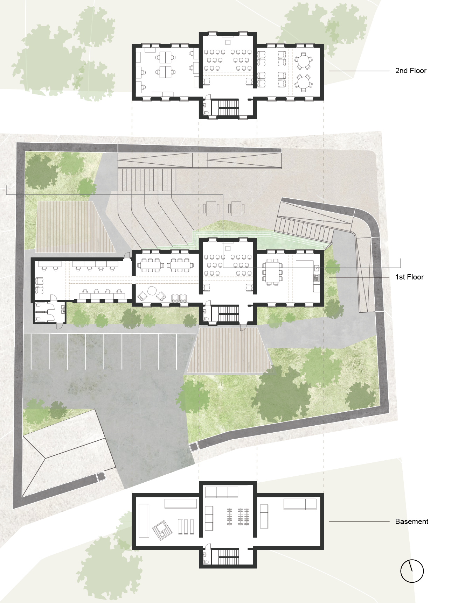
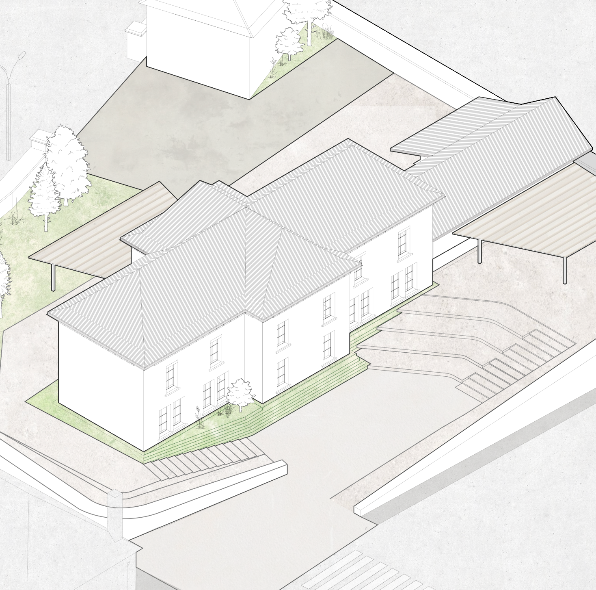
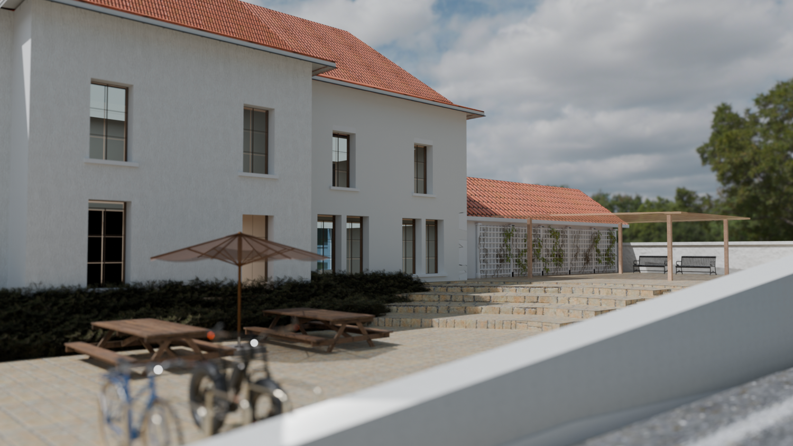
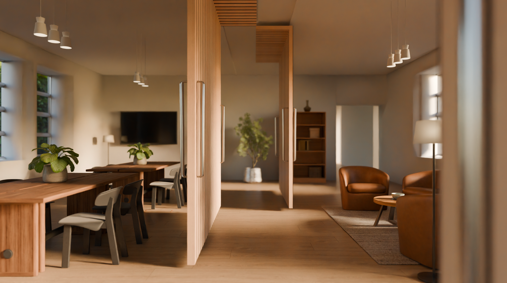